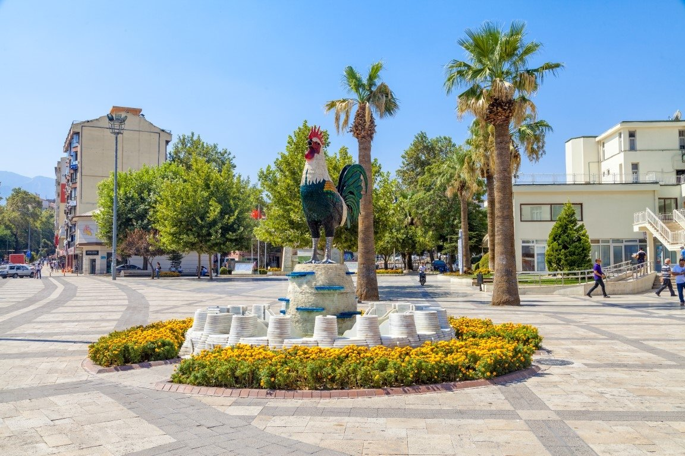
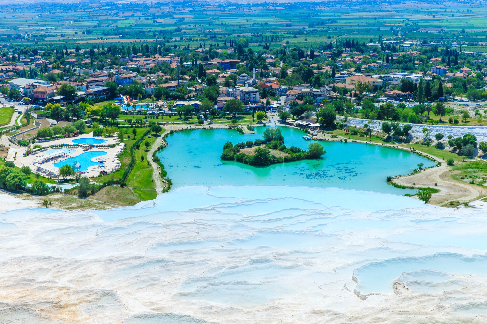
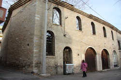
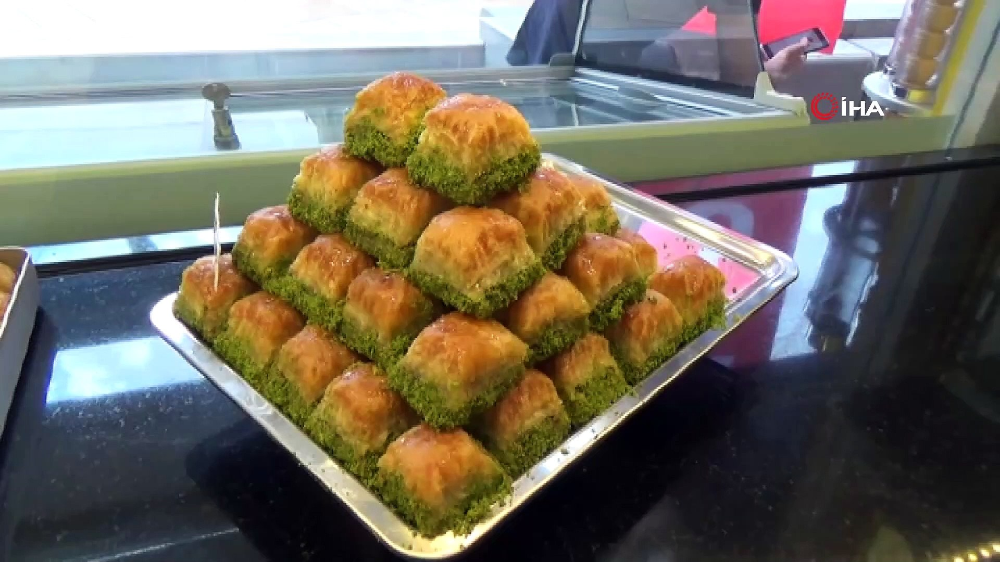
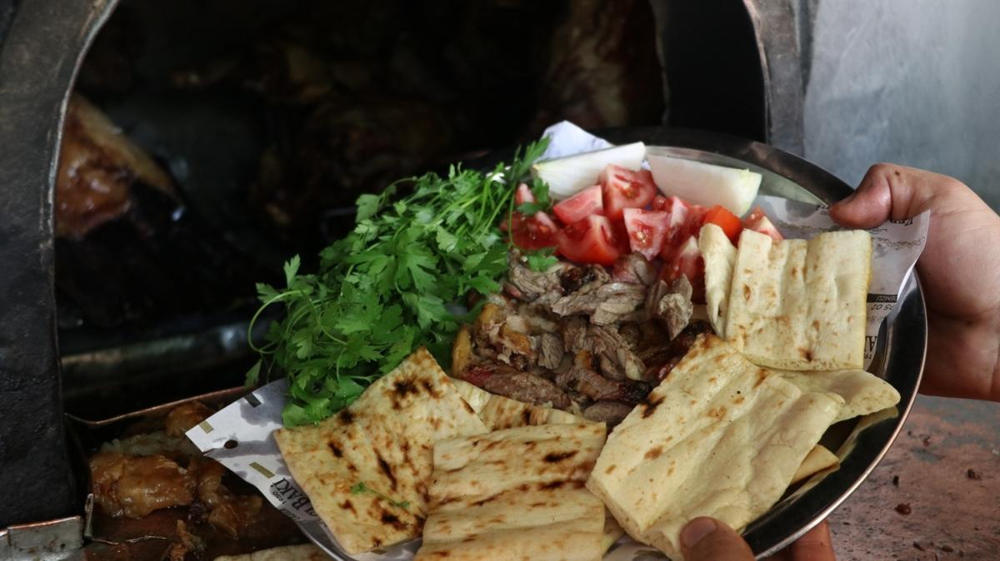
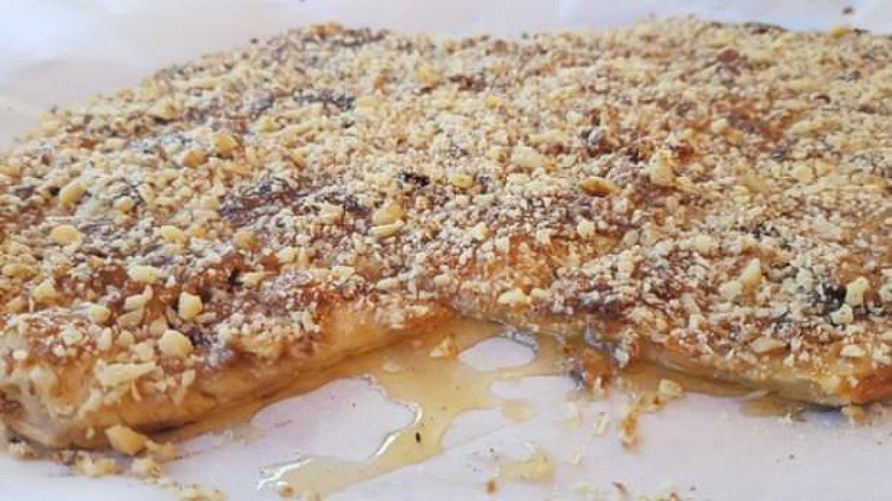

Denizli (Ancient Greek: Αττούδα) is an industrial city in the southwestern part
of Turkey and the eastern end of the alluvial valley formed by the river Büyük
Menderes,Denizli also attracts visitors to the nearby mineral-coated hillside hot
spring of Pamukkale, and with red color thermal water spa hotels Karahayıt,
just 5 kilometres (3 miles) north of Pamukkale.
The ancient ruined city of Hierapolis, as well as ruins of the city of
Laodicea on the Lycus, the ancient metropolis of Phrygia
List of districts;
*Merkezefendi

*Pamukkale

*Tavas

List of The Most Popular Dishes;
Baklava:)

The feature of the pan baklava is that it is opened 35 floors
and has plenty of walnuts on each floor and it is produced
completely naturally
Denizli Kebab:

Denizli kebab, which is made from lamb and cooked in a
tandoor fire in Denizli, is preferred by local and foreign
tourists as well as local people
Tavas Dessert:

Denizli's famous Tavas Pide, it is prepared
by mixing tahini into its dough. It is served with honey
and walnuts on it